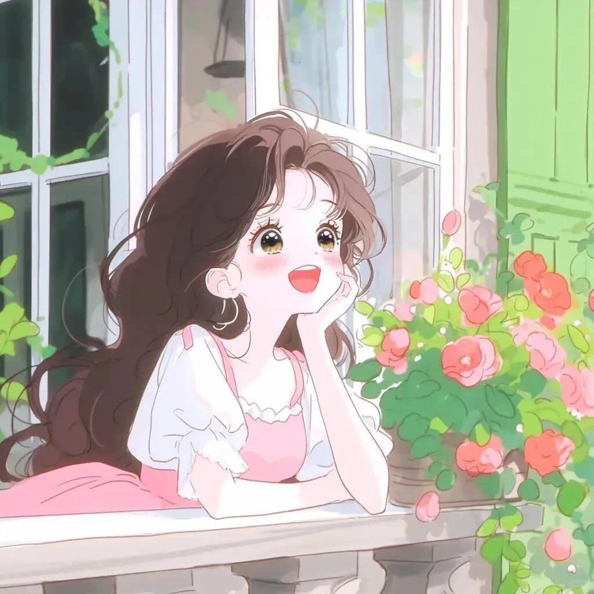

Xiao Nai Ping
本站已运行
00天0小时00分00秒
Picture information 1
Picture information 2
Picture information 3
Picture information 4
Picture information 5

Picture information 6
Picture information 7
Picture information 8